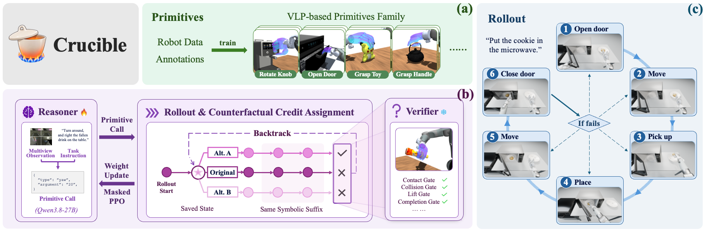

Framework overview
View full-size figure (opens in a new tab)
Crucible is a counterfactual RLVR framework that trains the Reasoner using verifiable physical feedback.
(a) Using robot demonstrations collected through teleoperation, we train a vision–language–primitive model (VLP) to provide arm–hand targets for executing manipulation primitives. (b) During training, Crucible revisits earlier decisions in failed rollouts and compares physical outcomes of alternative calls from the same saved state. These comparisons guide masked PPO updates to the Reasoner, while the execution stack and Verifier remain fixed. (c) During rollouts, the Reasoner selects primitives using task instructions and current observations; rule-based controllers connect actions into closed-loop, long-horizon manipulation.
Abstract
Combining vision-language planners with control primitives is a promising paradigm for solving complex, long-horizon robotic manipulation tasks. However, reliable execution still requires high-level planners to improve from the outcomes of their own actions, particularly when hallucinations or incorrect reasoning lead to failures. Learning from such feedback is challenging in long-horizon tasks because a primitive may appear locally correct but cause failure many steps later, while a task-level failure signal does not reveal which decision should be corrected. This lack of credit assignment makes planner learning inefficient.
We present Crucible, a reinforcement learning from verifiable rewards (RLVR) framework with counterfactual credit assignment. Crucible builds on a new vision-language-primitive (VLP) model constructed from robot demonstrations, with each primitive paired with a privileged verifier. For a failed trajectory, our counterfactual RLVR algorithm intervenes on individual primitive decisions from saved states and replays the remaining plan, identifying failure-critical decisions whose replacement turns failure into success. Full returns from these alternative executions define advantages for masked PPO that updates only the identified decision tokens.
Experiments on long-horizon tabletop manipulation show that counterfactual replay rescues 49.5% of eligible failures, revealing substantial actionable supervision from failed executions. In closed-loop tabletop grasping, counterfactual PPO achieves 62.38% overall success, compared with 55.45% for episode-return PPO and 56.44% for the shared SFT baseline.